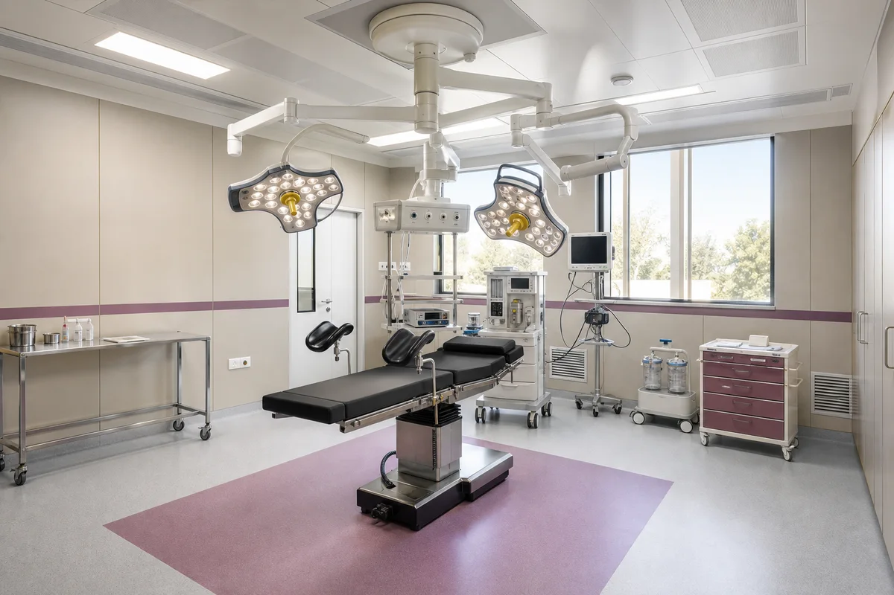
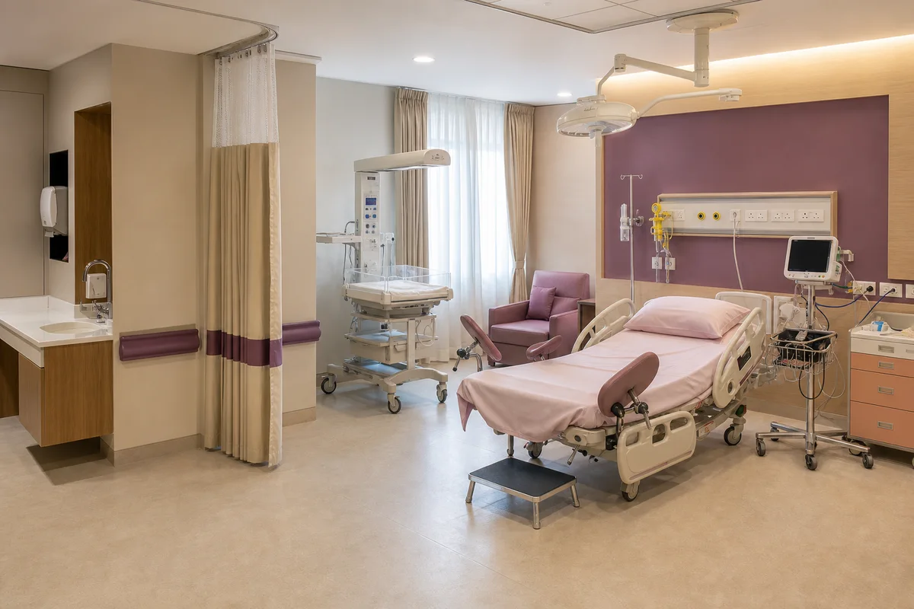
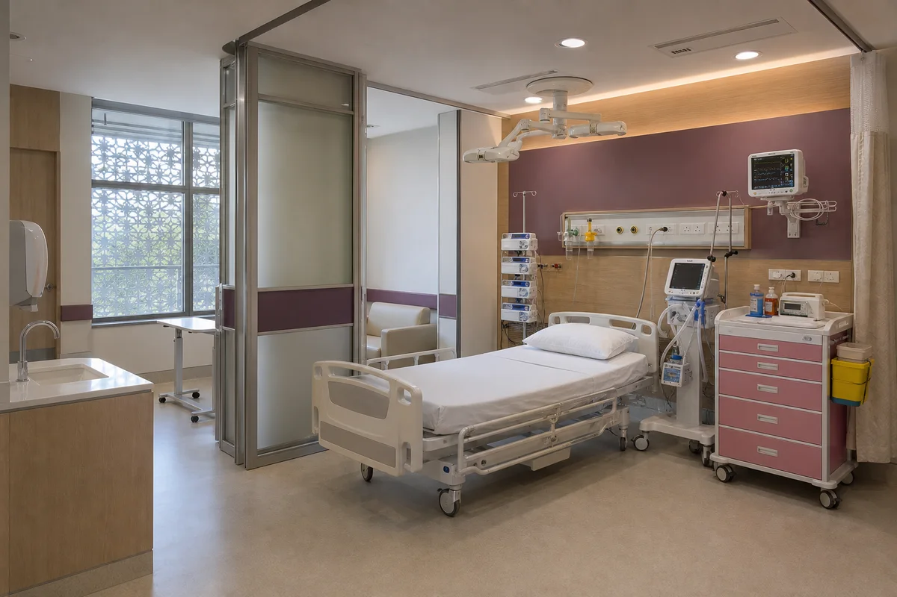
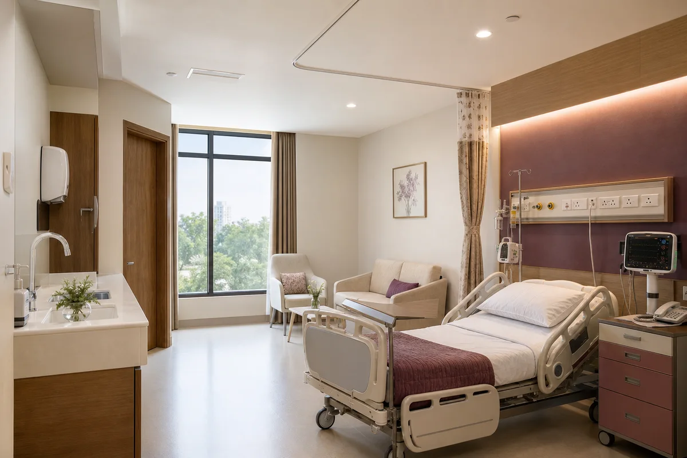
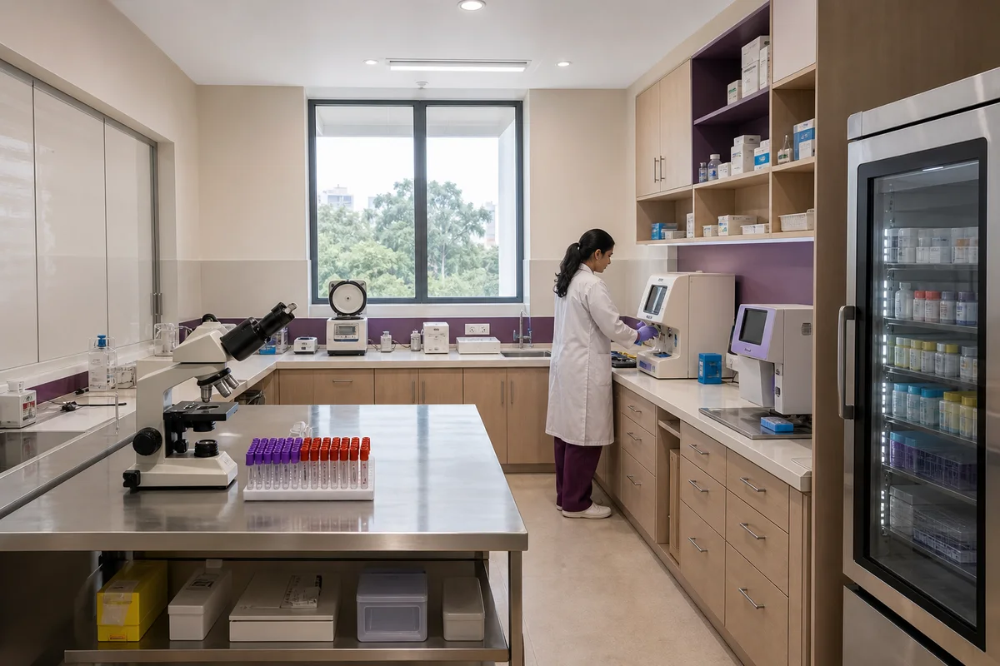

01 — Operation Theater
Modular operation theater
A modern modular operation theater for planned and emergency surgery — caesarean sections and gynaecological procedures happen here, under the same roof as your consultations. When minutes matter during a delivery, the theater is down the corridor, not across the city.
02 — Delivery Room
Delivery room
A calm, private delivery room, fully prepared for labour and birth — with continuous fetal monitoring and your own doctor leading the delivery. Set up so the experience stays personal, even while everything clinical stands ready.


03 — Surgical ICU
Surgical ICU
Most patients never need it — and that's the point of having it. The surgical ICU means close monitoring and immediate attention are on site after surgery or a difficult delivery, without transferring you to another hospital at the hardest moment.
04 — Patient Rooms
Patient rooms
Private inpatient rooms for recovery after delivery or a procedure — with space for family to stay close. Recovery is quieter when the people you love are in the room and the doctor who treated you walks in on rounds.


05 — Ultrasound
Ultrasound and Doppler
Pregnancy scans, pelvic ultrasound, and Doppler studies — read by our in-house radiologist and explained the same visit. More about ultrasound at Srishti →
06 — Diagnostics
Diagnostics and pathology lab
Blood work and routine tests done on site, so a checkup doesn't turn into a week of errands. Results go straight to your doctor and are explained to you — not just handed over in an envelope.

Why it matters
Facilities are not the story. They're the reason the story holds.
Everything above exists so one promise can be kept: the doctor who knows you never has to send you somewhere else at the moment that matters.
See it yourself
Come walk through before you decide
Many families visit Srishti before choosing where to deliver. You're welcome to — we're open all days, 7am to 10pm.